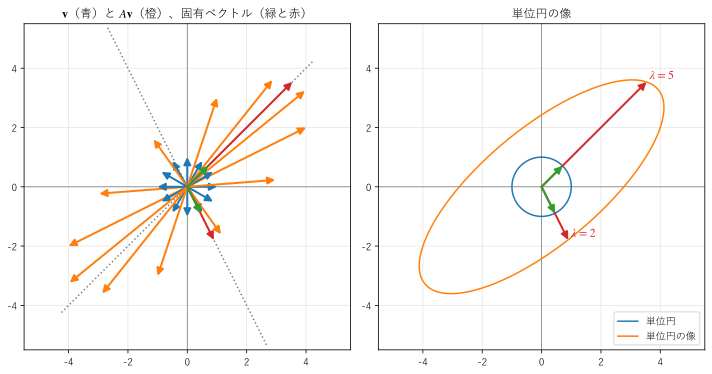
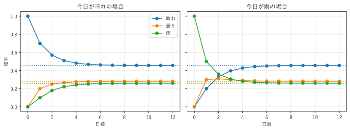
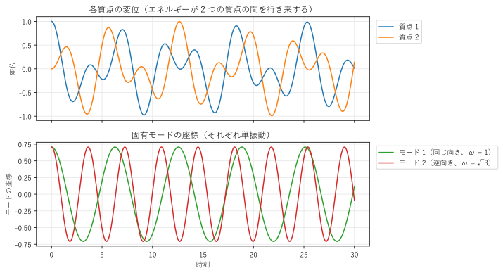

第 10 章 固有値と固有ベクトル
行列による変換では、ほとんどのベクトルの向きが変わる。しかし、特別な方向のベクトルだけは、向きを変えずに伸び縮みするだけである。この方向が固有ベクトル、伸び縮みの倍率が固有値である。この章では、固有値と固有ベクトルの意味と求め方、対角化を説明し、漸化式、マルコフ連鎖、振動の問題に応用する。
固有値と固有ベクトル
\(n\) 次の正方行列 \(A\) について、
を満たす数 \(\lambda\) と 0 でないベクトル \(\bm{v}\) があるとき、\(\lambda\) を \(A\) の固有値、\(\bm{v}\) を固有値 \(\lambda\) に対する固有ベクトルという。
\(A\bm{v} = \lambda \bm{v}\) は、「\(\bm{v}\) を \(A\) で変換しても、向きが変わらず（または真逆になり）、長さが \(\lambda\) 倍になるだけ」という意味である。図 15 は、次の行列 \(A\) で、単位円の上のベクトルを変換したものである。

図 15 ベクトルとその像（左）、単位円とその像（右）
左の図で、青の矢印 \(\bm{v}\) と橙の矢印 \(A\bm{v}\) は、ほとんどが異なる向きを向いている。しかし、点線で示した 2 つの方向では、緑の矢印（\(\bm{v}\)）と赤の矢印（\(A\bm{v}\)）が同じ直線の上にある。これが固有ベクトルの方向であり、\((1, 1)\) 方向は 5 倍に、\((1, -2)\) 方向は 2 倍になる。
固有ベクトルを何倍しても固有ベクトルである（\(A(c\bm{v}) = \lambda (c\bm{v})\)）。そのため、固有ベクトルは「方向」として決まり、長さや符号は任意である。NumPy などのライブラリは、通常、ノルムが 1 の固有ベクトルを返す。
固有値の求め方
\(A\bm{v} = \lambda \bm{v}\) は \((A - \lambda I)\bm{v} = \bm{0}\) と書き直せる。これが \(\bm{0}\) でない解 \(\bm{v}\) を持つのは、\(A - \lambda I\) が正則でないとき、つまり
のときである（第 6 章）。これを \(A\) の固有方程式（特性方程式）という。左辺は \(\lambda\) の \(n\) 次の多項式なので、固有値は（重複や複素数を含めて）:math:n 個ある。
上の \(A\) で計算してみる。
なので、固有値は \(\lambda = 5, 2\) である。固有ベクトルは、それぞれの \(\lambda\) について \((A - \lambda I)\bm{v} = \bm{0}\) を解いて求める。
\(\lambda = 5\)：\(\begin{pmatrix} -1 & 1 \\ 2 & -2 \end{pmatrix} \bm{v} = \bm{0}\) から \(\bm{v} = (1, 1)\)
\(\lambda = 2\)：\(\begin{pmatrix} 2 & 1 \\ 2 & 1 \end{pmatrix} \bm{v} = \bm{0}\) から \(\bm{v} = (1, -2)\)
固有値には、次の便利な性質がある（\(\lambda_1, \ldots, \lambda_n\) は重複を含めた固有値）。
固有値の和は、対角成分の和（トレース、\(\mathrm{tr}\,A\)）に等しい。例では \(5 + 2 = 4 + 3\)。
固有値の積は、行列式に等しい。例では \(5 \times 2 = 4 \cdot 3 - 1 \cdot 2\)。
したがって、固有値に 0 があることと、\(A\) が正則でないことは同値である。
三角行列の固有値は、対角成分である。
固有方程式を解く方法は、2 次や 3 次の手計算では使えるが、5 次以上の多項式には解の公式がないので、一般の行列には使えない。数値計算では、QR 法などの反復法で固有値を求める。NumPy の np.linalg.eig() は、LAPACK のこのような方法を使っている。
9def report() -> None:
10 """固有値、固有ベクトル、対角化、べき乗の結果を表示する."""
11 a = np.array([[4.0, 1.0],
12 [2.0, 3.0]])
13 values, vectors = np.linalg.eig(a) # vectors の各列が固有ベクトル
14 # 結果は複素数の配列で返るので、虚部が 0 なら実数の配列にする
15 values, vectors = np.real_if_close(values), np.real_if_close(vectors)
16 with np.printoptions(precision=4, suppress=True):
17 print("固有値 =", values)
18 print("固有ベクトル（列）=")
19 print(vectors)
20 for i in range(len(values)):
21 v = vectors[:, i]
22 print(f"A v{i + 1} == λ{i + 1} v{i + 1}:", np.allclose(a @ v, values[i] * v))
23
24 p = np.array([[1.0, 1.0],
25 [1.0, -2.0]]) # 固有ベクトル (1, 1) と (1, -2) を列に並べる
26 d = np.diag([5.0, 2.0])
27 p_inv = np.linalg.inv(p)
28 print("P^-1 A P =")
29 print(p_inv @ a @ p)
30 a10 = p @ np.diag([5.0**10, 2.0**10]) @ p_inv
31 print("P D^10 P^-1 =")
32 print(a10)
33 print("np.linalg.matrix_power(A, 10) =")
34 print(np.linalg.matrix_power(a, 10))
35 print("P D P^-1 == A:", np.allclose(p @ d @ p_inv, a))
36
37 rotation = np.array([[0.0, -1.0],
38 [1.0, 0.0]]) # 90 度の回転
39 print("90 度の回転の固有値 =", np.linalg.eigvals(rotation))
固有値 = [5. 2.]
固有ベクトル（列）=
[[ 0.7071 -0.4472]
[ 0.7071 0.8944]]
A v1 == λ1 v1: True
A v2 == λ2 v2: True
P^-1 A P =
[[5. 0.]
[0. 2.]]
P D^10 P^-1 =
[[6510758. 3254867.]
[6509734. 3255891.]]
np.linalg.matrix_power(A, 10) =
[[6510758. 3254867.]
[6509734. 3255891.]]
P D P^-1 == A: True
90 度の回転の固有値 = [0.+1.j 0.-1.j]
np.linalg.eig() は、固有値の配列と、固有ベクトルを列に並べた行列を返す。固有ベクトルは正規化されているので、\((1, 1)\) は \((0.7071, 0.7071)\) に、\((1, -2)\) は符号が反転して \((-0.4472, 0.8944)\) になっている。どちらも同じ方向を表す。また、np.linalg.eig() は結果を複素数の配列で返すことがあるので、サンプルでは np.real_if_close() で、虚部が 0 なら実数の配列に変換している。
サンプルの全体：ch10_eigen.py、ch10_eigen_geometry.py
対角化
\(n\) 次の正方行列 \(A\) が線形独立な \(n\) 本の固有ベクトル \(\bm{v}_1, \ldots, \bm{v}_n\) を持つとき、それらを列に並べた行列 \(P\) と、固有値を対角成分に並べた対角行列 \(D\) を使って
と書ける。\(AP\) の \(j\) 列目は \(A\bm{v}_j = \lambda_j \bm{v}_j\) であり、\(PD\) の \(j\) 列目も \(\lambda_j \bm{v}_j\) だからである。これを \(A\) の対角化という。
第 7 章の言葉では、\(P^{-1}AP\) は「固有ベクトルを基底とする座標で見た \(A\)」である。固有ベクトルの座標系では、変換は「各軸の方向に固有値倍するだけ」という最も簡単な形になる。
対角化の効果が最もよく分かるのは、行列のべき乗である。
途中の \(P^{-1}P\) が消えるので、\(A^k\) は固有値を \(k\) 乗するだけで計算できる。リスト 35 の実行結果では、\(PD^{10}P^{-1}\) と np.linalg.matrix_power(a, 10) が一致している。また、\(k\) が大きくなると、\(A^k\) は絶対値が最大の固有値の項が支配的になる。この性質は、マルコフ連鎖や PageRank（第 14 章）で使う。
すべての行列が対角化できるわけではない。例えば \(\begin{pmatrix} 1 & 1 \\ 0 & 1 \end{pmatrix}\) は、固有値が 1（重複）で、固有ベクトルは \((1, 0)\) 方向しかないので、\(P\) を作れない。ただし、固有値がすべて異なる行列は必ず対角化でき、第 11 章で扱う対称行列も必ず対角化できる。工学で現れる行列の多くは、どちらかに当てはまる。
固有値が複素数になる場合
90 度の回転 \(R = \begin{pmatrix} 0 & -1 \\ 1 & 0 \end{pmatrix}\) は、すべてのベクトルの向きを変えるので、実数の固有ベクトルを持たない。固有方程式は \(\lambda^2 + 1 = 0\) であり、固有値は \(\pm i\)（虚数単位）になる（リスト 35 の実行結果の最後の行）。一般に、固有値が複素数になることは、変換に回転の成分が含まれることを表す。本書では、複素数の固有値はこの例で触れるだけにする。
例：フィボナッチ数列
フィボナッチ数列 \(F_0 = 0, F_1 = 1, F_{n+1} = F_n + F_{n-1}\) は、ベクトルと行列で次のように書ける。
したがって \((F_{n+1}, F_n) = A^n (F_1, F_0)\) であり、\(A^n\) の (1, 2) 成分が \(F_n\) である。\(A\) の固有値は \(\phi = (1 + \sqrt{5})/2 \approx 1.618\)（黄金比）と \(\psi = (1 - \sqrt{5})/2 \approx -0.618\) で、対角化すると一般項
が得られる（ビネの公式）。\(|\psi| < 1\) なので、\(n\) が大きいと \(F_n \approx \phi^n / \sqrt{5}\) であり、フィボナッチ数列は公比 \(\phi\) の等比数列のように増える。
26def report() -> None:
27 """2 つの方法で求めたフィボナッチ数を表示する."""
28 a = np.array([[1.0, 1.0], [1.0, 0.0]])
29 print("A の固有値 =", np.sort(np.real_if_close(np.linalg.eigvals(a))))
30 print("F_0 から F_10 =", [fibonacci_matrix(n) for n in range(11)])
31 for n in (10, 50, 80):
32 print(f"F_{n}: 行列のべき乗 {fibonacci_matrix(n)}、ビネの公式 {fibonacci_binet(n):.1f}")
A の固有値 = [-0.61803399 1.61803399]
F_0 から F_10 = [0, 1, 1, 2, 3, 5, 8, 13, 21, 34, 55]
F_10: 行列のべき乗 55、ビネの公式 55.0
F_50: 行列のべき乗 12586269025、ビネの公式 12586269025.0
F_80: 行列のべき乗 23416728348467685、ビネの公式 23416728348467744.0
\(F_{80}\) では、ビネの公式の結果が正しい値とずれている。浮動小数点数の有効数字は約 16 桁なので、17 桁の整数は正確に表せないからである。整数の行列でべき乗を計算した結果は正確である（ただし、64 ビット整数で表せる \(F_{92}\) まで）。
サンプルの全体：ch10_fibonacci.py
例：マルコフ連鎖
天気が「晴れ」「曇り」「雨」の 3 つの状態を、次の確率で移り変わるとする。行列 \(P\) の \(j\) 列目は、今日の天気が \(j\) 番目の状態のときの、明日の天気の確率である。各列の和は 1 である。
今日の天気の確率分布を \(\bm{x}_0\) とすると、\(k\) 日後の分布は \(\bm{x}_k = P^k \bm{x}_0\) である。このように、次の状態の確率が現在の状態だけで決まる過程をマルコフ連鎖、\(P\) を推移行列という。
図 16 のように、分布は日数とともに一定の分布に近づく。今日が晴れでも雨でも、行き着く先は同じである。

図 16 天気の確率分布の変化。点線は定常分布
行き着く先の分布 \(\bm{\pi}\) は、\(P\bm{\pi} = \bm{\pi}\) を満たす。つまり、固有値 1 の固有ベクトルである。これを定常分布という。各列の和が 1 で、成分が正の推移行列は、必ず固有値 1 を持ち、他の固有値の絶対値は 1 より小さい。そのため、\(P^k \bm{x}_0\) を固有ベクトルで展開すると、固有値 1 の成分だけが残り、他の成分は \(k\) とともに 0 に近づく。
24def steady_state() -> NDArray[np.float64]:
25 """固有値 1 の固有ベクトルを、成分の和が 1 になるように正規化して返す."""
26 values, vectors = np.linalg.eig(P)
27 k = int(np.argmin(np.abs(values - 1.0)))
28 v: NDArray[np.float64] = np.real(vectors[:, k])
29 return v / v.sum()
P の固有値 = [1. 0.4732 0.1268]
1 日後の分布 = [0.7 0.2 0.1]
2 日後の分布 = [0.57 0.25 0.18]
5 日後の分布 = [0.4685 0.2794 0.2521]
10 日後の分布 = [0.4568 0.2825 0.2607]
定常分布 = [0.4565 0.2826 0.2609]
固有値は 1、0.4732、0.1268 である。2 番目に大きい固有値の絶対値 0.4732 が、定常分布に近づく速さを決める（1 日ごとに、定常分布とのずれがおよそ 0.47 倍になる）。
サンプルの全体：ch10_markov.py
例：ばねと質点の振動
2 つの質点（質量 \(m\)）を 3 本のばね（ばね定数 \(k\)）で「壁 - ばね - 質点 1 - ばね - 質点 2 - ばね - 壁」とつないだ系を考える。質点の変位を \(x_1, x_2\) とすると、運動方程式は次のようになる。
\(m = k = 1\) とし、ベクトルで書くと次のようになる。\(\ddot{\bm{x}}\) は時間による 2 階微分（加速度）である。
2 つの質点の運動は、ばねを通じて互いに影響し合う（連成している）ので、このままでは解きにくい。そこで、\(K\) の固有ベクトル \(\bm{v}\) の方向の運動 \(\bm{x}(t) = q(t)\,\bm{v}\) を考えると、\(\ddot{q}\,\bm{v} = -q K\bm{v} = -\lambda q\,\bm{v}\) なので、\(\ddot{q} = -\lambda q\) という 1 つの単振動の方程式になる。角振動数は \(\omega = \sqrt{\lambda}\) である。
固有値 = [1. 3.]
角振動数 = [1. 1.7321]
固有ベクトル（列）=
[[ 0.7071 0.7071]
[ 0.7071 -0.7071]]
固有値は 1 と 3 で、次の 2 つの振動の仕方（固有モード）がある。
モード 1：固有ベクトル \((1, 1)\) 方向。2 つの質点が同じ向きに動き、角振動数は \(\omega_1 = 1\) である。
モード 2：固有ベクトル \((1, -1)\) 方向。2 つの質点が逆向きに動き、中央のばねが大きく伸び縮みするので、角振動数は \(\omega_2 = \sqrt{3}\) と高い。
任意の運動は、2 つの固有モードの重ね合わせで表せる。図 17 は、質点 1 だけを 1 だけずらして静かに離した場合の運動である。各質点の変位は複雑に見えるが、固有モードの座標（\(q_1, q_2\)）に分けると、それぞれ単純な単振動である。

図 17 ばねと質点の振動。各質点の変位（上）と固有モードの座標（下）
33def displacement(t: NDArray[np.float64]) -> tuple[NDArray[np.float64], NDArray[np.float64]]:
34 """時刻 t の変位（2 行 N 列）と、各モードの座標（2 行 N 列）を返す."""
35 values, vectors = eigen_modes()
36 omega = np.sqrt(values)
37 c = vectors.T @ X0 # 初期変位を固有ベクトルで展開する（vectors は直交行列）
38 modes = c[:, np.newaxis] * np.cos(np.outer(omega, t))
39 return vectors @ modes, modes
K は対称行列なので、固有ベクトルを求めるのに np.linalg.eigh() を使っている（第 11 章）。固有ベクトルを列に並べた行列は直交行列になるので、初期変位の固有モードの座標は、転置を掛けるだけで求められる（第 9 章）。
この考え方は、建物や橋、機械の振動解析の基本である。自由度が数万の構造物でも、剛性行列と質量行列の固有値問題を解いて固有振動数と固有モードを求め、外から加わる振動の周波数が固有振動数と一致しないか（共振しないか）を調べる。
サンプルの全体：ch10_vibration.py
この章のまとめ
固有ベクトルは、行列で変換しても向きが変わらないベクトルであり、固有値はその伸び縮みの倍率である。
固有値は、固有方程式 \(\det(A - \lambda I) = 0\) の解である。固有値の和はトレース、積は行列式に等しい。
線形独立な固有ベクトルが \(n\) 本あれば、\(A = PDP^{-1}\) と対角化でき、\(A^k = PD^kP^{-1}\) と計算できる。
固有値と固有ベクトルは、漸化式の一般項、マルコフ連鎖の定常分布、振動の固有モードの計算に使われる。